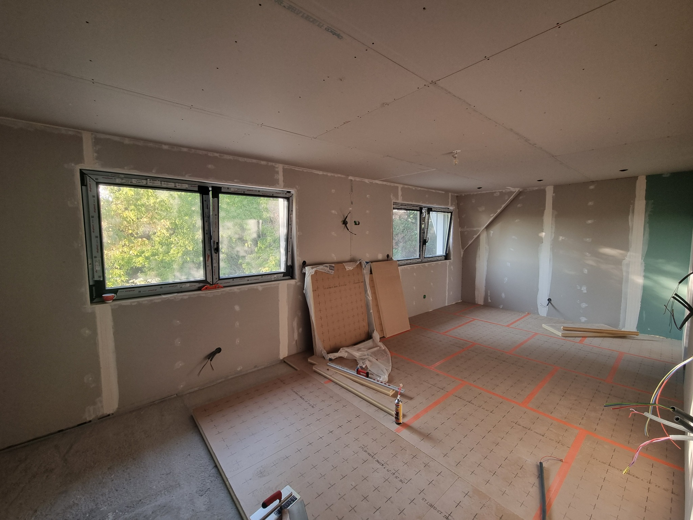

Suite parentale · 01
La chambre
Une pièce entièrement reprise pour créer une suite lumineuse et chaleureuse : parquet en chevrons, menuiseries sombres, rangements intégrés et décor classique contemporain.
Surfaces de la chambre parentale
Dimensions : 7,70 m × 3,45 m · hauteur : 2,45 m
| Surface | Calcul | Superficie |
|---|---|---|
| Deux grands murs | 2 × 7,70 × 2,45 | 37,73 m² |
| Deux petits murs | 2 × 3,45 × 2,45 | 16,91 m² |
| Plafond | 7,70 × 3,45 | 26,57 m² |
| Total murs | 54,64 m² | |
| Total murs et plafond | 81,20 m² | |
Travaux restant à faire
- Bandes à joint
- Enduit
- Moulures
- Peinture
- Plancher chauffant — pose réalisée par le propriétaire
- Chape liquide
- Parquet en chevrons collé

Avant Projet
Projet